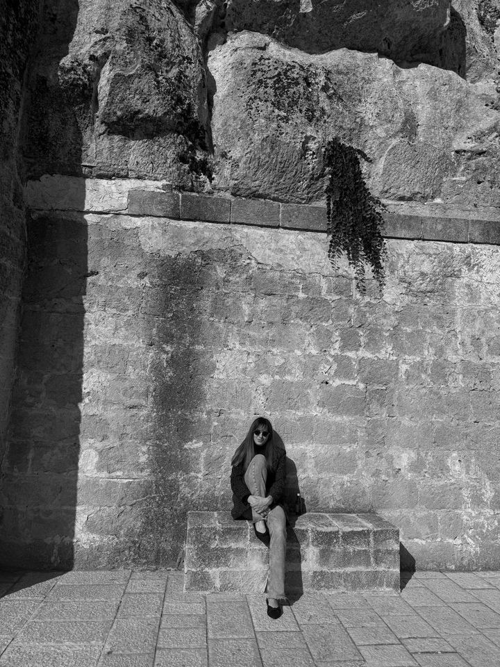

Writer &Editor
Writing about history, archaeology, cultural heritage, and the human stories that connect them.
About

Anastasia Adeler is a writer, journalist, and editor whose work explores history, archaeology, cultural heritage, and the human experience behind them.
She is an editor at Popular Archaeology Magazine, where her work includes editorial development, special projects, and writing on archaeological discoveries, museums, and cultural heritage.
Her reporting takes her from archaeological sites and museum collections to contemporary places where history continues to shape everyday life. She is particularly interested in the relationship between people and places, cultural memory, identity, and the ways the past remains present.
She is also the founder of Living Rooms, an independent editorial project dedicated to long-form journalism, cultural conversations, and stories that benefit from time and attention.